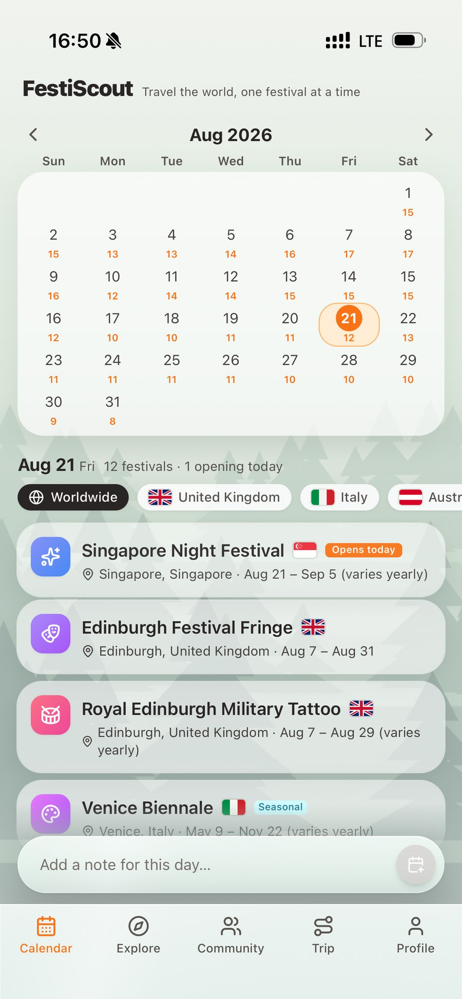
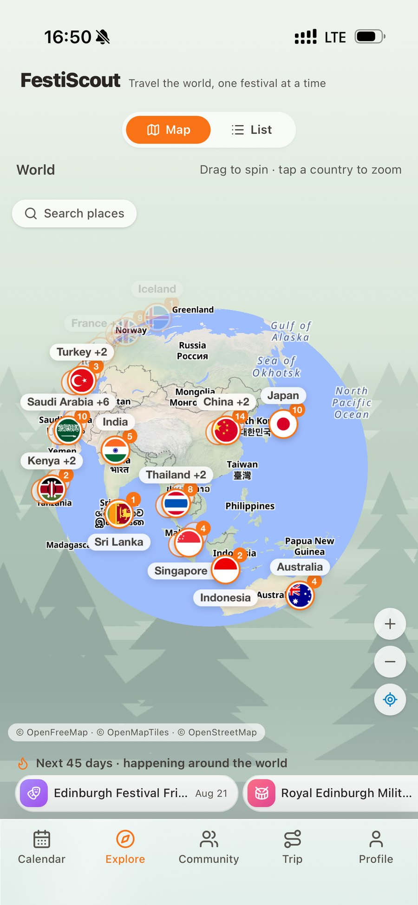
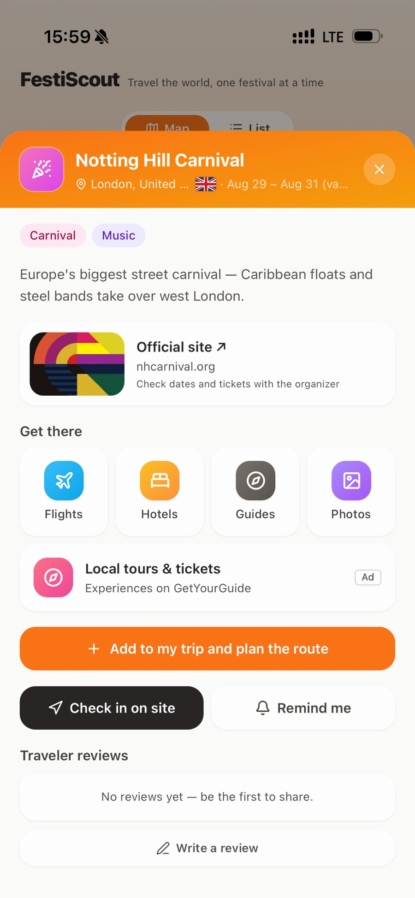
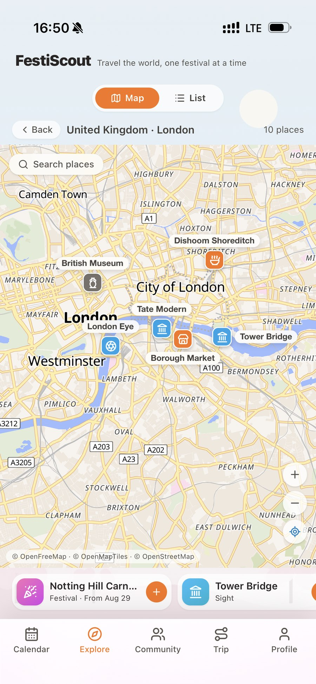
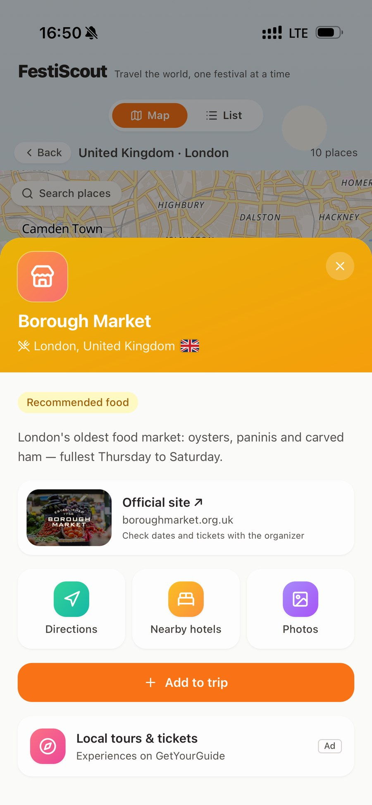
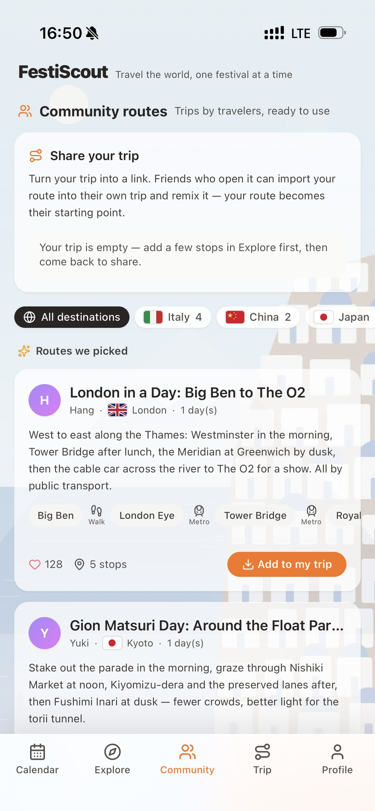
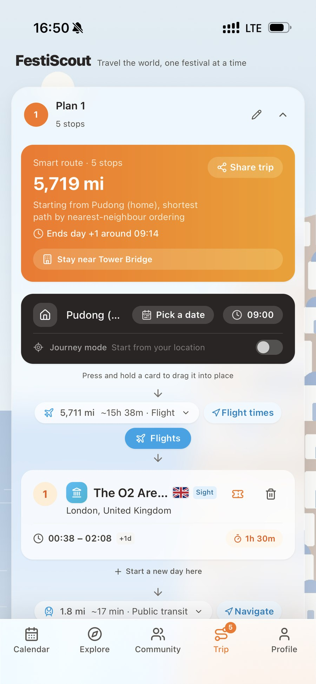

Latest Release
FestiScout: Travel the World, One Festival at a Time
A world festival calendar for iPhone. Spin a globe that zooms seamlessly down to street level, discover festivals across six continents, plan day-by-day routes, and book in one tap. Designed, built, and maintained independently.

Previous Release

Version 1.0: The Beginning
An intelligent browser assistant powered by any API or local LLM that seamlessly translates your text instructions into automated web actions.